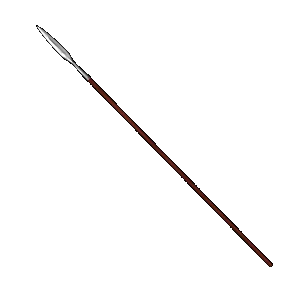

|
Боевое копье |
|
| Копье было главнейшим
и наиболее распространенным оружием ведения
ближнего боя. Конница становится основным родом
войск, а копье -- важнейшим наступательным
оружием. Вид ощетинившегося копьями, тесно построенного полка, был очень типичен для данного периода Древней Руси. Бездействие и плохая выучка копейщиков приводили к поражениям. Поэтому в средневековом войске были хорошо обученные бойцы-копейщики, чьей основной задачей было нападение и завязывание решительного боя. Копейщики сражались в правильных тактических построениях. Различались копья по форме пера: ланцетовидные, удлиненно-треугольные, продолговато-яйцевидные, четырехгранные и вытянуто-треугольные. Длина древка копья приближается к росту человека, а длина кавалерийских копий иногда достигала и трех (!) метров. Самыми распространенными формами наконечников были вытянутые яйцевидные, удлиненно-треугольные и пикообразные. Наконечник-перо в первую очередь предназначался для пробивания доспехов. Разновидностью копья была рогатина, которая появилась на Руси лишь в XII веке и была самым крупным и мощным из древнерусских копий. Рогатина почти всегда имела обтекаемую лавролистную форму. |
|
Текст и
иллюстрации (c) 1997 Snowball Interactive Entertainment, Inc. |